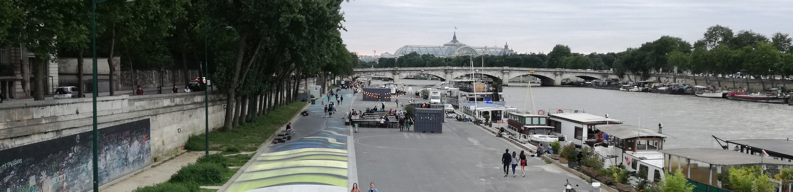

<div class="container">
	<h1>Etude de cas</h1>

	<p>
		Le cas de la fermeture des voies sur berge est un exemple emblématique de mesure de réduction de la place de la voiture à Paris. Les débats qu’il a suscités illustrent les différents nœuds de controverse qui sont soulevés dans ce site.
		<br><br>
		Se sont posées plusieurs questions sur les possibles répercussions de la fermeture des voies sur la pollution, sur les reports de circulation, et donc l’efficacité de la mesure. Au-delà de l’efficacité, les acteurs se sont aussi opposés sur la manière, parfois jugées unilatérale, dont la fermeture a été mise en place, et quelles inégalités elle risque d’engendrer.
	</p>

	<p class="text-center">
		<a href="#chronologie-globale" class="btn btn-lg btn-danger">Voir la chronologie de l'étude de cas</a>
		<a href="#etude-de-cas" class="btn btn-lg btn-success">Voir l'étude de cas</a>
	</p>
</div>